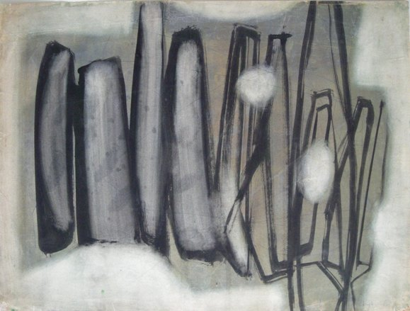

Peter Clough
1928 – 1991
Artist Biography
Peter Clough was a Stockport born abstract artist and sculptor who exhibited at some of London’s most innovative galleries in the late 1950s and early 1960s. In the 1950s Clough is thought to have lived in St Ives where he was friendly with Trevor Bell and Brian Wall. In 1956 he had a solo show of paintings and drawings at the newly opened New Vision Centre Gallery (NVCG) and a joint show with Suzanne Rodillon at the same venue in 1957. When that year Halima Nalecz left the NVCG and set up her own gallery, the Drian Gallery, she included a Peter Clough in her first mixed exhibition – an abstract oil on one of the gallery’s floorboards. Clough moved to Paris around this time when he married and a French Algerian woman with whom he had three children. He returned to England in 1982 when the marriage broke up. Clough went on to have a joint show of his sculpture alongside Peter Stroud’s paintings at the Institute for Contemporary Art (ICA) in 1960 and then a solo show at the ICA in 1963. The Piccadilly Gallery also sold his work. Critic Ian Nairn described Clough’s sculptures as “creating superbly taut permanent expressions of energy” and the artist as having “an artistic sensibility that is bound, sooner or later, to make the possessors of Cloughs into richer people in both senses of the word”. Clough was represented in Paris by Galerie Lara Vincey, which also showed artists such as Seung Je Rhee and Sayed Haider Raza. Clough had a solo exhibition in 1984 at GalerieSpArtS in Paris. In 2003 the George Sand Mediatheque in Paris had three separate retrospectives of Clough’s work, the first covering sculptures and paintings from 1958-62, the second showing his oils, polychrome inks and sculptures and the third highlighting the last works of his career from 1976-1991, mainly collages. Manchester Art Gallery has a 1961 sculpture in its permanent collection.

Untitled, 1957